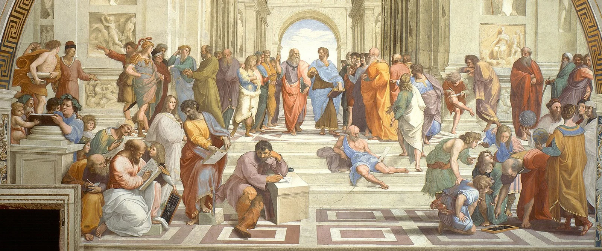

Mathématiques approfondies ou appliquées
Rédiger une copie de maths
Justifier chaque étape, conclure clairement, choisir ses questions dans le temps imparti.
Bientôt en ligneLes colles corrigées →
La méthode de chaque épreuve, à l'écrit comme à l'oral, et des annales corrigées pas à pas, pour arriver en avril prêt.
Écrits Ecricome du mardi 13 au jeudi 15 avril, écrits BCE du mercredi 21 au mercredi 28 avril 2027 : dates annoncées, à vérifier sur concours-bce.com et ecricome.org.
Du 7 décembre 2026 au 11 janvier 2027, sur le site de la BCE.
Du 13 au 15 avril, trois jours d'épreuves.
Du 21 au 28 avril, une semaine d'épreuves.
Après l'admissibilité, dans chaque école.
Pour chaque épreuve : ce que le jury attend, la démarche pas à pas et les erreurs qui coûtent des points. Les mêmes épreuves à Ecricome et à la BCE.
Justifier chaque étape, conclure clairement, choisir ses questions dans le temps imparti.
Problématiser le sujet, bâtir un plan qui avance, placer les bons exemples et les bons chiffres.
Définir les termes, mobiliser les auteurs et les mécanismes, argumenter sans réciter le cours.

Analyser le sujet, construire une vraie réflexion, citer juste et à bon escient.
Dégager les idées, confronter les textes, reformuler sans trahir et tenir le nombre de mots.
Traduire juste, éviter les pièges classiques, argumenter dans la langue avec des exemples précis.
Chaque annale part d'un sujet tombé au concours et le reprend étape par étape, du premier regard sur l'énoncé à la copie finale. À chaque étape, ce qu'il fallait voir et pourquoi : de quoi refaire le chemin seul sur le sujet suivant.
Une fois admissible, chaque école fait passer ses propres épreuves. De quoi les préparer dès maintenant.
Se présenter, raconter son parcours et ses projets, tenir face aux questions du jury.
Bientôt en ligneRésumer un document, le commenter, défendre un avis dans la langue.
Bientôt en ligneCe que chaque école ajoute à l'entretien, et comment s'y préparer.
Bientôt en ligne